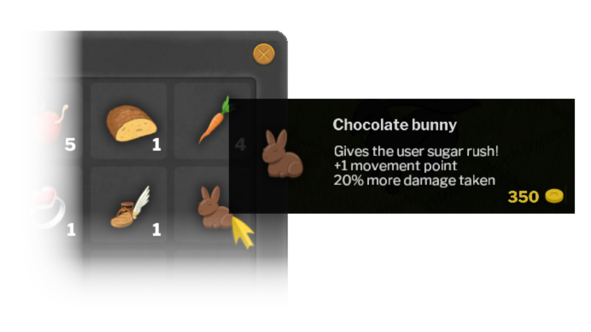

Finish errands and get rewarded handsomely! You will hunt monsters, collect treasure, discover hidden artifacts, craft items and more.
Earn equipment that modifies your fighting conditions in fun, challenging and meaningful ways. No more arbitrary statistics! Craft consumables that help replenish health and give other advantages.
Mana is not the only resource the hero needs to cast spells. You will also need to use your knowledge of Japanese kanji. But fret not, you will learn as you progress through the game.
Strategize as you plow through hordes of enemies. With an array of spells at your disposal, you can always pick the right tool to finish off an enemy. Almost, that is.